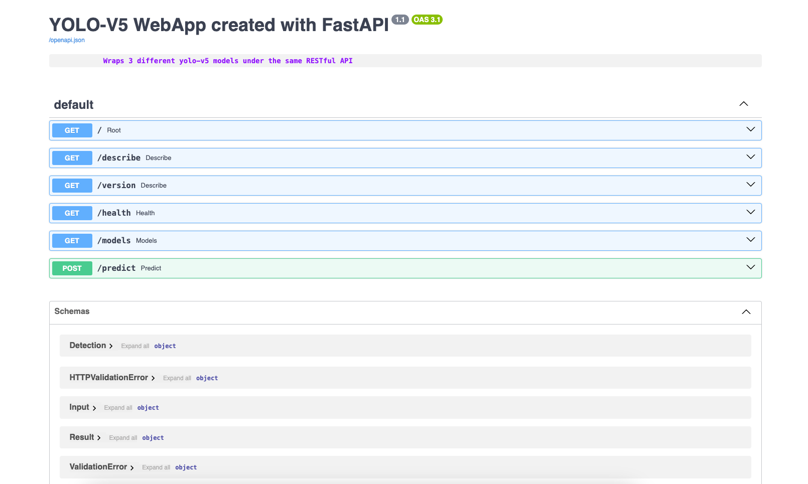
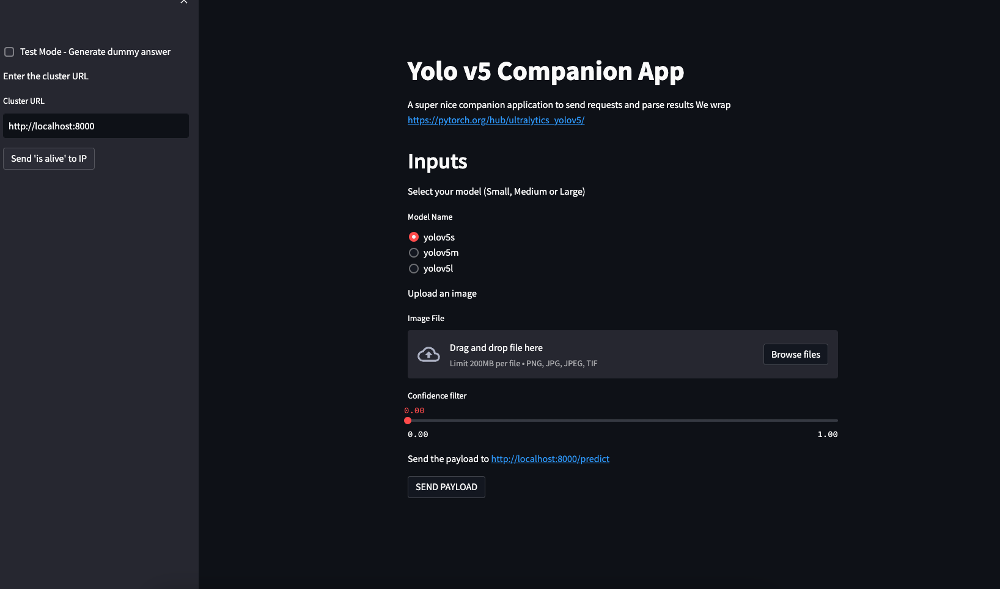

Deploy your ML model into production🔗
Objectifs🔗
L'objectif du TP est de convertir ce notebook en deux services containerisés : Un back-end qui est un serveur qui reçoit des images et sort des prédictions, ainsi qu'un front-end qui vous permet d'envoyer des images au modèle et d'afficher les prédictions sur lesdites images,
Afin de gagner du temps, les dockerfiles ont déjà été construits et sont prêts à être testés et déployés. Si vous souhaitez rentrer dans les détails et écrire vous-même le code, vous pouvez consulter la version longue de ce TP (qui n'est pas à jour).
Nous allons donc voir : - La création d'un docker "backend" qui contient le modèle derrière une "API" - L'interaction avec ce docker - La création d'un docker "frontend" qui contient une IHM permettant d'interagir plus facilement avec le backend - docker-compose pour lancer des applications multi-container - Le déploiement du backend sur GCP - Le test final
Nous nous plaçons dans un contexte "microservices" où le front-end et le backend sont 2 containers différents. Il aurait été possible de n'en faire qu'un qui contient les deux (un "monolithe"). Une architecture microservices peut avoir certains avantages (modularité, maintenance) mais est plus complexe à mettre en oeuvre.
1 - Mise en place du projet Google Cloud Platform🔗
Maintenant que vous avez vos crédits, suivez les instructions du 1er TP Google Cloud Platform pour créer votre propre projet GCP
2 - Démarrage du Code Space🔗
Démarrez un github codespace depuis le repository https://github.com/fchouteau/isae-cloud-computing-codespace
Il est nécéssaire d'utiliser un codespace à partir de ce repository car il contient tout ce dont vous avez besoin pour ce TP.

Normalement, une fois le codespace lancé, vous devriez obtenir une interface vscode avec deux dossiers dont un nommé tp-deployment. Rendez-vous dans ce dossier,
Il y a plusieurs ressources : le frontend qui contient de quoi construire l'IHM, le backend qui contient de quoi construire le serveur, et des ressources de tests.
3 - Construction et tests du backend🔗
Le README.md du dossier backend contient des détails concernant la construction du serveur et de son API (qui était auparavant laissé en exercice). Nous utilisons FastAPI qui un framework de construction d'applications Web.
Le code principal se trouve dans app.py. On déclare des "routes" (des méthodes d'interactions avec le serveur) puis on leur assigne des fonctions.
Par exemple, vous pouvez regarder la route predict qui est associée à la fonction du même nom.
@app.post(
"/predict",
description="Send a base64 encoded image + the model name, get detections",
response_description="Detections + Processing time",
response_model=Result,
)
Cette fonction effectue l'inférence sur l'image qui est donnée via la requête REST vers la route /predict.
Afin de mieux illustrer les possibilités d'intéraction avec ce serveur, nous allons le lancer localement, en utilisant l'image docker déjà construite (Remarque: vous pouvez reproduire le docker en lançant docker build -f Dockerfile -t eu.gcr.io/third-ridge-138414/yolo-v5:1.2)
Lancez la commande suivante docker run --rm -p 8000:8000 eu.gcr.io/third-ridge-138414/yolo-v5:1.2
Cela lance un container depuis l'image docker du backend en exposant le port 8000.
Connectez-vous au port 8000 du codespace. Vous devriez avoir une page vierge qui contient "YOLO-V5 WebApp created with FastAPI"
Nous allons maintenant regarder la documentation de l'application. Celle-ci est automatiquement générée à partir du code de app.py et est disponible sur la route /docs
Connectez-vous donc à la route /docs en rajoutant ce terme à l'URL du codespace.

Cette page web décrit les différentes routes accessibles et leurs méthodes d'intéraction, ainsi que les formats d'entrée et de sortie. C'est la documentation de l'API et lorsque vous interagissez avec le serveur, c'est la seule chose dont vous avez besoin.
Nous allons maintenant interagir avec ce serveur.
Dans le dossier backend se trouve un fichier python test_webapp.py. Il va automatiquement envoyer les bonnes requêtes au serveur. Executez-le (python test_webapp.py), vous devriez voir s'afficher des tests correspondants au code, ainsi que les prédictions des chats sur l'image cats.png
Laissez le terminal avec le container démarré pour l'instant,
4 - Construction et tests du frontend🔗
Comme vous aurez pu le constater, ce n'est pas très intuitif d'interagir avec le backend via des scripts, on aimerait pouvoir visualiser plus facilement les prédictions, faire des seuils sur la confiance des objets, etc...
Pour cela nous allons créer une application streamlit (remarque: pour une introduction à streamlit rendez-vous dans la section 6 du BE)
Dans votre codespace, démarrez un nouveau terminal puis allez dans le dossier frontend. Là encore, le fichier app.py contient le code de l'applicaiton streamlit. Celle-ci va récupérer une image que vous allez uploader (image de votre choix) puis l'envoyer au serveur dont vous spécifiez l'IP dans la case en haut à gauche.
Nous allons lancer cette application,
docker run --rm -p 8501:8501 --network="host" eu.gcr.io/third-ridge-138414/yolo-v5-streamlit:1.5
Rendez-vous sur le port 8501 de votre github codespace,

La première étape est de renseigner l'adresse (URL) du backend. Pour tester que vous arrivez bien à joindre le serveur, cliquez sur le bouton "IS ALIVE". Ce bouton (voir code dans app.py) envoie une requête à la route /health pour vérifier que le serveur est vivant.
Par défaut, l'URL du serveur est http://localhost:8000 ce qui semble correct car nous avons ouvert un docker sur le port 8000.
Vous pouvez maintenant tester le serveur, et s'il marche, uploader une image de votre choix avec le bouton upload puis lancer une prédiction. Cela va uploader l'image dans le frontend, puis envoyer une requête POST à http://url-du-serveur/predict puis récupérer les résultats (le json) et l'interpréter correctement.
Vous noterez que nous avons démarré le frontend avec l'argument --network="host". Cela permet au container d'avoir accès au localhost (d'être sur le même réseau que l'hôte). Sans cet argument, les containers sont sur des réseaux séparés et ne se voient pas.
Vous pouvez maintenant stopper les deux containers (backend et frontend)
5 - docker-compose🔗
Pour simplifier cette étape de déploiement multi-containers qui peut être fastidieuse (imaginez une application à 4, 5 containers !), une solution nommée docker-compose existe. Voir une introduction à docker-compose
Cette solution permet de lancer une série de containers en les assignant à un même réseau, de façon déclarative, c'est à dire que l'on renseigne dans un fichier de configuration la mise en place des containers.
Notre docker-compose.yml se trouve dans le dossier tp-deployment
version: '3'
services:
yolo:
image: "eu.gcr.io/third-ridge-138414/yolo-v5:1.2"
ports:
- "8000:8000"
hostname: yolo
streamlit:
image: "eu.gcr.io/third-ridge-138414/yolo-v5-streamlit:1.5"
ports:
- "8501:8501"
hostname: streamlit
Ce fichier de configuration indique qu'au lancement le frontend et le backend vont se lancer simultanément, exposer leurs ports respectifs, et pouvoir communiquer entre eux via leurs "hostnames".
Nous allons lancer notre application par ce bias en lançant la commande docker-compose up
Voir doc docker-compose : https://docs.docker.com/compose/reference/
Cela va directement démarrer nos deux services, que vous pouvez retrouver sur les ports 8000 (backend) et 8501 (frontend)
Comme précédemment, vous pouvez vous connecter au frontend sur le port 8501 du codespace pour interagir directement avec le backend. La petite nuance est que ce backend est disponible sur http://yolo:8000 plutôt que http://localhost:8000 car le docker-compose a nommé les containers avec un hostname correspondant à celui spécifié (et les a mis en réseau)
Une fois que vous avez interagi avec votre déploiement, nous allons maintenant déployer le backend sur un serveur sur google cloud.
6 - Deploiement du backend sur une VM Google Compute Engine🔗
Nous allons maintenant démarrer une instance de VM Google Compute Engine et directement y déployer un container. Vous avez déjà vu cette méthode dans la section streamlit du BE
N'oubliez pas de connecter votre github codespace à votre projet gcp en utilisant gcloud init
Récupérez votre project_id gcp : `PROJECT_ID=$(gcloud config get-value project 2> /dev/null)``
Puis nous allons créer directement une VM en y déployant un container. Notez que l'on utilise cette fois un OS dédié à l'hébergement de containers (pas prévu pour s'y connecter en ssh) plutôt qu'ubuntu comme précédemment.
gcloud compute instances create-with-container fch-yolo-backend \
--project=${PROJECT_ID} \
--zone=europe-west1-b \
--machine-type=n1-standard-2 \
--image=projects/cos-cloud/global/images/cos-stable-109-17800-66-27 \
--boot-disk-size=20GB \
--boot-disk-type=pd-standard \
--container-image=eu.gcr.io/third-ridge-138414/yolo-v5:1.2 \
--container-restart-policy=always
Note : Si vous utilisez votre propre projet GCP, vous devez ouvrir le port 8000 à internet public pour pouvoir y accéder. Utilisez cette commande :
gcloud compute --project=${PROJECT_ID} firewall-rules create open-8000 --direction=INGRESS --priority=1000 --network=default --action=ALLOW --rules=tcp:8000 --source-ranges=0.0.0.0/0
7 - Tests🔗
Nous allons maintenant tester que notre backend est bien déployé. Il faut pour cela relancer le front-end et changer l'IP pour l'IP de la machine virtuelle précédemment lancée
- relancez le docker du frontend
docker run --rm -p 8501:8501 eu.gcr.io/third-ridge-138414/yolo-v5-streamlit:1.5 - connectez vous au port 8501 du github codespace, comme précédemment, et modifiez l'IP du backend pour qu'il corresponde à celle du serveur distant (toujours sur le port 8000)
- si vous envoyez une requête, elle est maintenant transmise au backend !
8. Yay !🔗
Success
🍾 Et voilà, vous avez déployé votre premier modèle sur le cloud
N'oubliez pas de supprimer votre VM GCP une fois le travail terminé